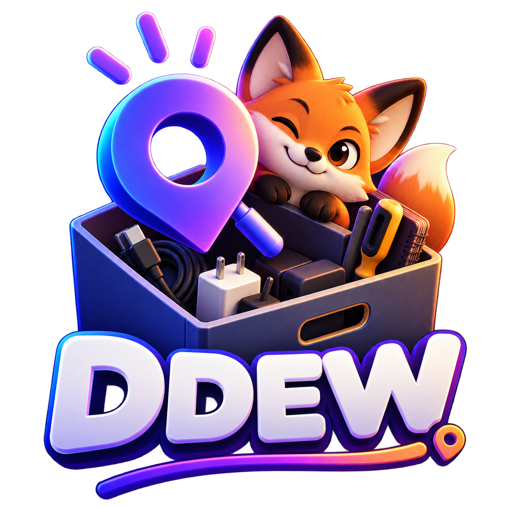
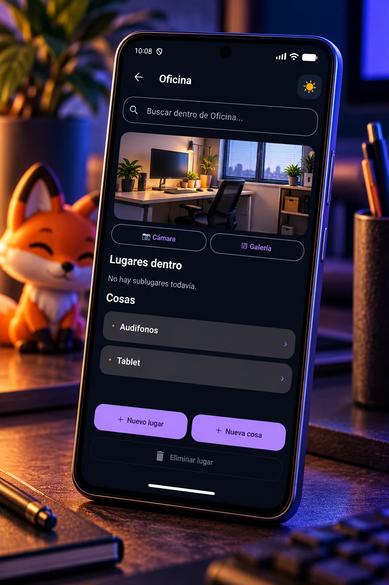
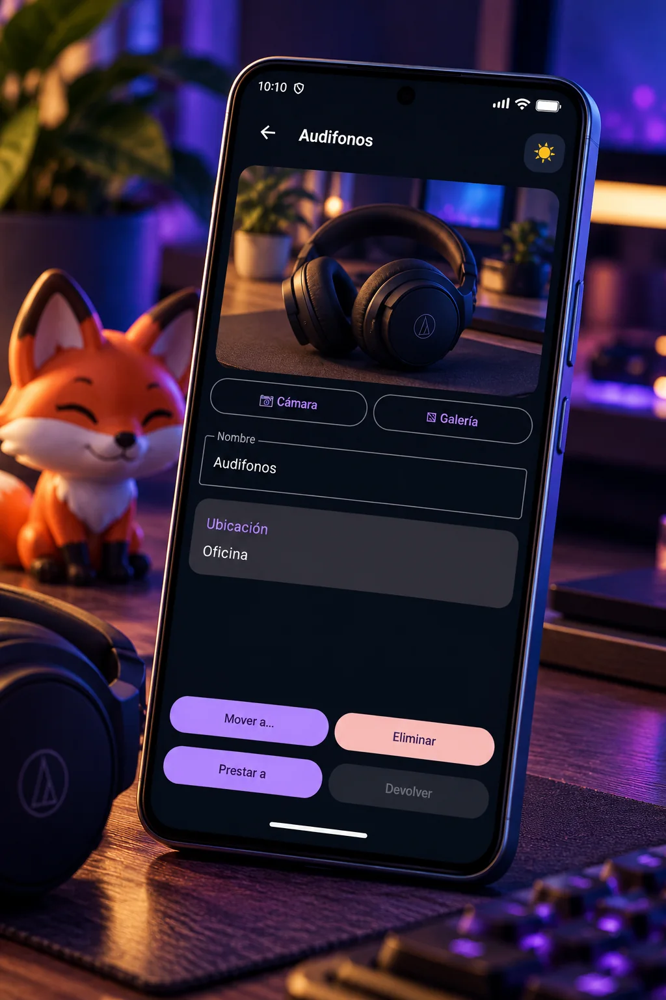
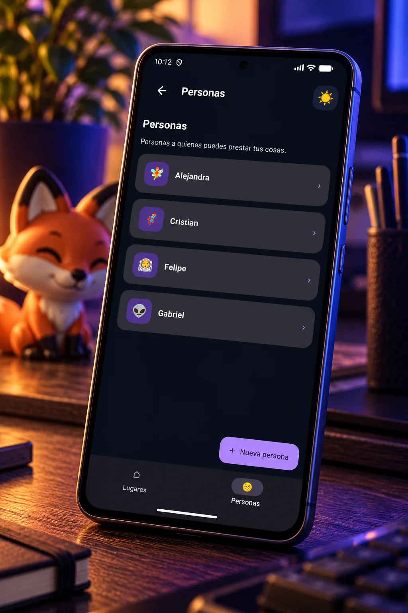
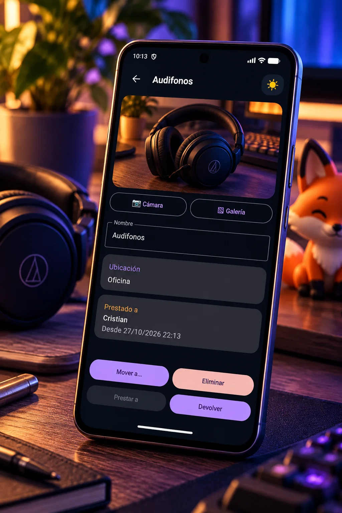

Lugares dentro de lugares
Organiza ubicaciones y sububicaciones de forma natural: casa, pieza, escritorio, cajón o cualquier estructura que te sirva para recordar.
DDEW es una memoria externa para tus cosas. Guarda dónde dejaste algo cuando todavía lo recuerdas y encuéntralo rápido cuando lo necesites.

DDEW está pensado para una tarea cotidiana: recordar dónde quedó algo. Registra un objeto en el lugar donde lo dejaste y luego búscalo por nombre o navega por tus ubicaciones. Sin convertir una pregunta simple en un sistema complicado.
Organiza ubicaciones y sububicaciones de forma natural: casa, pieza, escritorio, cajón o cualquier estructura que te sirva para recordar.
Encuentra objetos globalmente o revisa qué guardaste dentro de una ubicación concreta.
Agrega fotografías a objetos y lugares para reconocerlos más rápido. Las imágenes utilizadas por DDEW se conservan en el almacenamiento privado de la aplicación.
Registra a quién prestaste una cosa, consulta qué tiene cada persona y marca su devolución cuando vuelva a tus manos.
Desde recordar dónde dejaste algo hasta saber quién lo tiene prestado: DDEW mantiene esas referencias a mano sin complicarte con un sistema de inventario.




Esta primera versión funciona de forma local: no requiere cuenta, no usa analytics ni tracking, no contiene publicidad y no transmite la base de datos ni las fotografías a servidores de Corvin Develop.